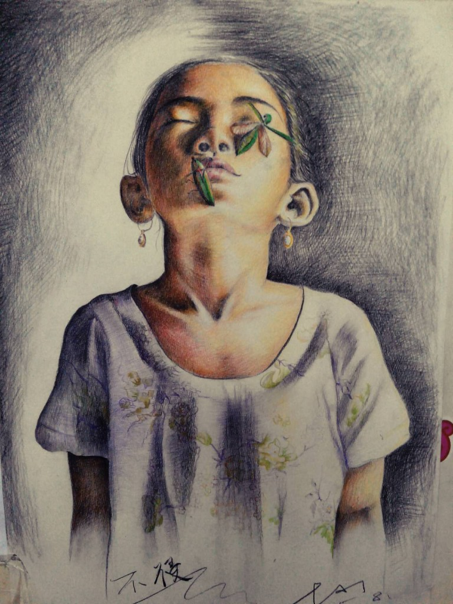
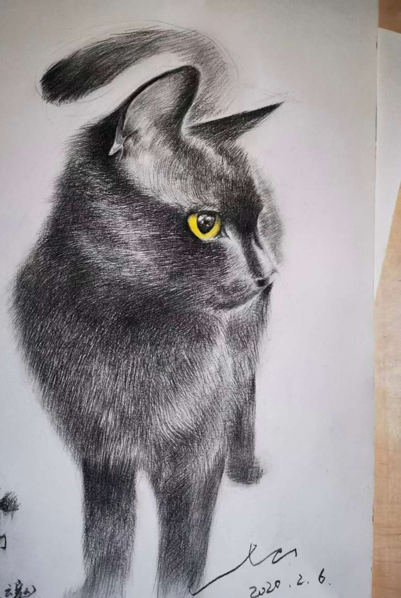

I love painting and street dance. Painting is the very quiet version. Street dance is the very sporty one. Both are me, just not at the same time.

Quiet mode
Eyes closed, and a dragonfly that never learned personal space. This is as still as I get. The dance shoes are in another room, and they know better than to interrupt.

Sporty mode
My cat.
Background drawing: Leonardo da Vinci, Vitruvian Man. Photograph by Luc Viatour. CC BY-SA 3.0